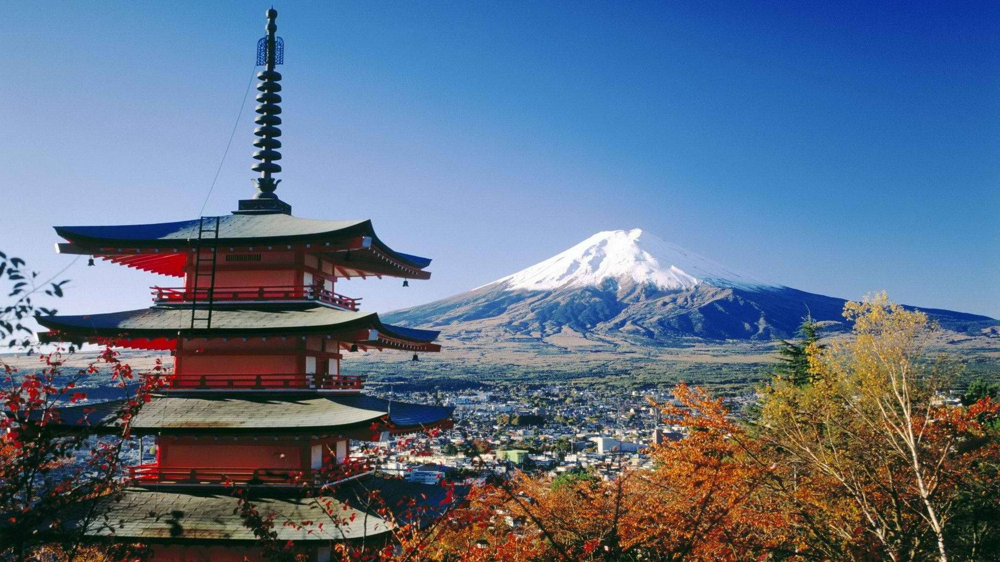

🌍 Popular Destinations
🇮🇳 Kolkata, India

🗺️ Top Attractions
- Victoria Memorial
- Howrah Bridge
- Indian Museum
- Kumartuli Artisans' Colony
🎨 Culture
Kolkata is the cultural capital of India—renowned for its literature, arts, Durga Puja celebrations, and vibrant intellectual scene.
🍲 Must-Try Cuisine
- Rosogolla & Mishti Doi
- Shorshe Ilish (Hilsa Fish in mustard curry)
- Kolkata-style Kathi Rolls
🌟 Why It's Special
Affectionately known as the "City of Joy", Kolkata charms visitors with its warmth, spirit, and soul. From bustling street life and historic trams to festive fervor and endless adda (chats), the city radiates happiness in every corner.
🇯🇵 Kyoto, Japan

🗺️ Top Attractions
- Fushimi Inari Shrine
- Kinkaku-ji (Golden Pavilion)
- Arashiyama Bamboo Grove
- Nishiki Market
🎎 Culture
Kyoto preserves Japan’s spiritual and artistic traditions through its temples, tea ceremonies, and elegant seasonal festivals like Gion Matsuri.
🍣 Must-Try Cuisine
- Kaiseki (multi-course seasonal meal)
- Matcha desserts
- Yuba (tofu skin)
🌸 Did You Know?
Kyoto has more than 1,600 Buddhist temples, making it Japan’s most sacred city.
🇬🇷 Santorini, Greece

🗺️ Top Attractions
- Oia’s Blue-Domed Churches
- Red & Black Beaches
- Caldera Sunset Views
🏛️ Culture
Perched atop volcanic cliffs, Santorini is a postcard-perfect island known for its Cycladic architecture and ancient Greek roots.
🍇 Must-Try Cuisine
- Tomatokeftedes (tomato fritters)
- Fava puree
- Local white wines
🇮🇩 Bali, Indonesia

🗺️ Top Attractions
- Tegallalang Rice Terraces
- Uluwatu Temple
- Ubud Monkey Forest
🕊️ Culture
Bali offers a spiritual blend of sacred rituals, nature, and warm hospitality—with ceremonies and dances a daily part of life.
🍜 Must-Try Cuisine
- Nasi Goreng (fried rice)
- Babi Guling (roast pig)
- Gado-Gado (salad with peanut sauce)
🇮🇹 Venice, Italy

🗺️ Top Attractions
- Rialto Bridge
- St. Mark’s Basilica
- Gondola rides on canals
🎭 Culture
Venice is a living museum—from Renaissance architecture and grand piazzas to its masked carnival traditions.
🍝 Must-Try Cuisine
- Sarde in saor (sweet-sour sardines)
- Squid ink risotto
- Tiramisu (originated nearby)
🚤 Fun Fact
There are no roads in Venice—just canals and walkways. Boats are the only way to get around!